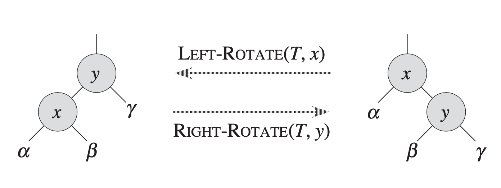

AVL Trees, Splay Trees & Amortized
AVL trees¶
AVL 树，是一种平衡的二叉搜索树。
为什么选择平衡二叉树？¶
Average search time是搜索每个节点花费时间的平均。
Average search time = 3.5
Average search time = 3.1
性质¶
- 空二叉树是一个 AVL 树
- 如果 T 是一棵 AVL 树，那么其左右子树也是 AVL 树，并且 \(|h(ls) - h(rs)| < 1\)，h 是其左右子树的高度
- 树高为 \(O(log n)\)
Definition
The balance factor BF( node ) = hL - hR . In an AVL tree, BF( node ) = -1, 0, 1.
Note
错误示范： 正确示范：
旋转 rotation¶
 旋转的简要操作：
- 左旋就向左旋，右旋就向右旋
- 左旋：原非根节点的左子树掉到原根节点的右子树；右旋：原非根节点的右子树掉到原根节点的左子树
代码实现¶
| C | |
|---|---|
1 2 3 4 5 6 7 8 9 10 11 12 13 14 15 16 17 | |
构造 AVL Trees¶
RR-rotation¶
 对于发现错误的节点(finder)来说，它发现错误是在它的右节点的右子树上面的节点引发的，所以准备进行RR-rotation。
对于发现错误的节点(finder)来说，它发现错误是在它的右节点的右子树上面的节点引发的，所以准备进行RR-rotation。
这时候只需要以finder进行一次左旋即可。

LL-rotation¶
同上RR-rotation，改成右。
LR-rotation¶

finder发现引发错误的来源是左节点的右子树上的节点引发的。此时的做法是：
- finder的左节点左旋
- finder右旋

RL-rotation¶
同上LR-rotation，改下左右。


Note
增加一个节点会导致插入节点一路向上到根节点的BF值改变。
增加一个节点不一定会出现问题。
出现问题只需解决最低的finder，它上面的finder会随着改变自动变合法。
代码实现¶
| C | |
|---|---|
1 2 3 4 5 6 7 8 9 10 11 12 13 14 15 16 17 18 19 20 21 22 23 24 25 26 27 28 29 | |
分析¶
 对于计算有很大用。
对于计算有很大用。
Splay Trees¶
Splay 树, 或 伸展树，是一种平衡二叉查找树，它通过 Splay/伸展操作 不断将某个节点旋转到根节点，使得整棵树仍然满足二叉查找树的性质，能够在均摊 \(O(log N)\) 时间内完成插入，查找和删除操作，并且保持平衡而不至于退化为链。
置顶操作¶

zig¶
直接转X和P，将X变为根
zig-zig¶
先转上，再转下，将X变为根
zig-zag¶
先转下，再转上，将X变为根。
删除操作¶
 找到要删除的节点时，splay树已经将其变成根了。删除根，留下左右两个子树。接下来找左子树的最大值，此时左子树的最大值变成了根。根据binary search tree，左子树的最大值没有右节点。最后只需将右子树接过去就好了。
找到要删除的节点时，splay树已经将其变成根了。删除根，留下左右两个子树。接下来找左子树的最大值，此时左子树的最大值变成了根。根据binary search tree，左子树的最大值没有右节点。最后只需将右子树接过去就好了。
Amortized Analysis¶
引入¶
均摊分析（Amortized Analysis）是一种用于分析算法和动态数据结构性能的技术。它不仅仅关注单次操作的成本，还通过评估一系列操作的平均成本，为整体性能提供更加准确的评估。均摊分析不涉及概率，且只能确保最坏情况性能的每次操作耗费的平均时间，并不能确认系统的平均性能。在最坏情况下，均摊分析通过将高成本操作的开销分摊到低成本操作上，确保整体操作的平均成本保持在合理范围内。

均摊分析通常采用三种主要分析方法：聚合分析、记账分析和势能分析。这些方法各有侧重，分别适用于不同的场景，但它们的共同目标是通过均衡操作成本，优化数据结构在最坏情况下的整体性能表现。
以下三种分析均用栈来分析(Pop, Push, Multipop)：
聚合分析 Aggregate analysis¶
证明对所有的n，由n个操作所构成的序列的总时间在最坏情况下为T(n)，每一个操作的平均成本为T(n)/n；
记账分析 Accounting method¶
在平摊分析的记帐方法中，决定每一个操作的均摊成本，对不同的操作赋予不同的费用，某些操作的费用比它们的实际代价或多或少。我们对一个操作的收费的数量称为平摊代价。当一个操作的平摊代价超过了它的实际代价时，两者的差值就被当作存款(credit)，并赋予数据结构中的一些特定对象，可以用来补偿那些平摊代价低于其实际代价的操作。这种方法与聚集分析不同的是，对后者，所有操作都具有相同的平摊代价。数据结构中存储的总存款等于总的平摊代价和总的实际代价之差。
势能分析 Potential method¶
在平摊分析中，势能方法（potential method）不是将已预付的工作作为存在数据结构特定对象中存款来表示，而是将存款总体上表示成一种“势能”或“势”，它在需要时可以释放出来，以支付后面的操作。势是与整个数据结构而不是其中的个别对象发生联系的。
 如果能找到O(log n)来约束均摊成本，则实际成本就会被O(log n)约束住。
如果能找到O(log n)来约束均摊成本，则实际成本就会被O(log n)约束住。